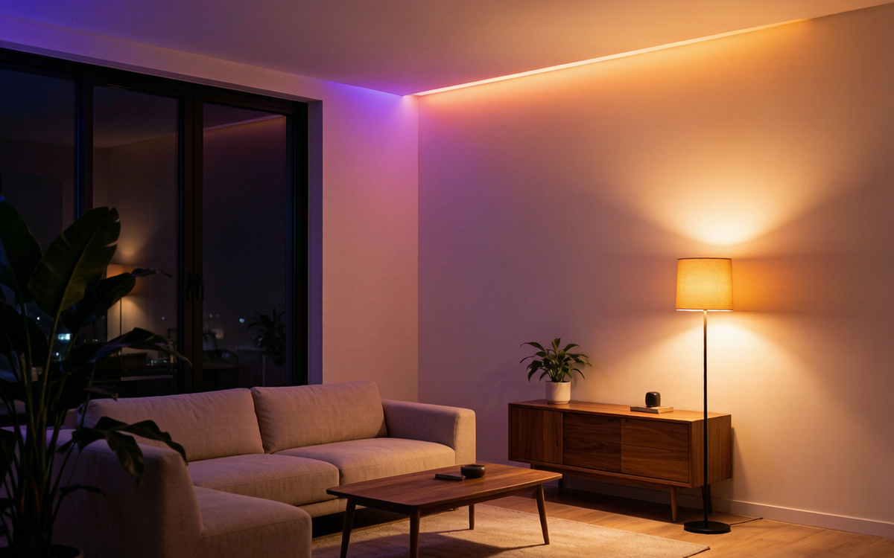
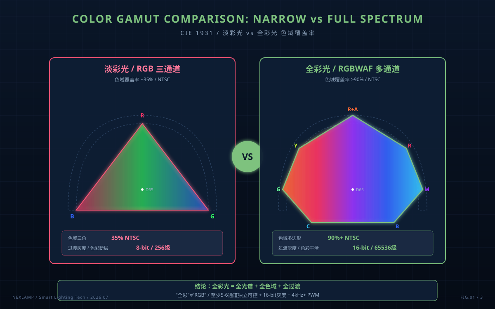
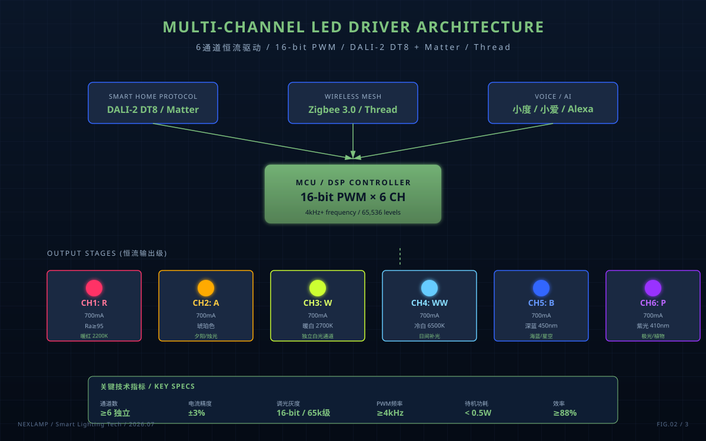
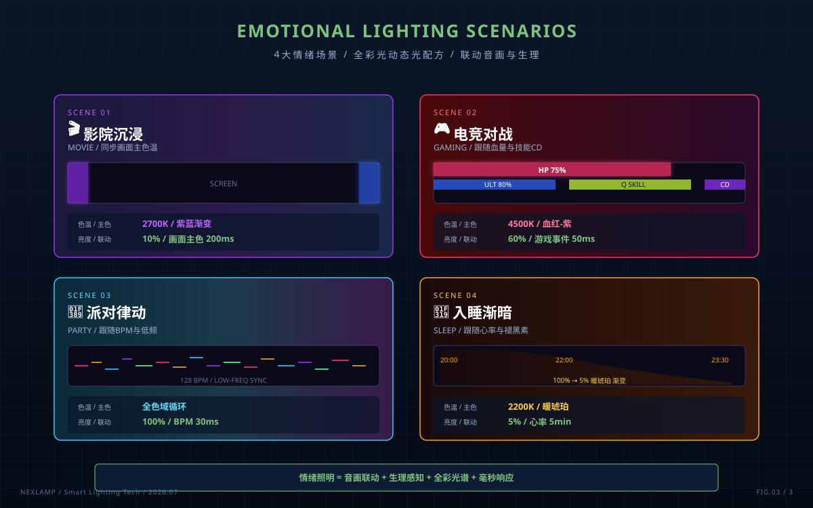

你有没有过这种经历：周末晚上想窝在沙发上看《流浪地球3》，把家里的智能灯调到"影院模式"——结果灯变成了死板的紫蓝色，整个房间像网吧包间；想打游戏营造点紧张气氛，灯却只会傻乎乎地变红；好不容易来个朋友开派对，灯光"唱歌"和BGM完全对不上节拍。
问题不在APP，问题在于——你用的"全彩灯"其实只是"淡彩光"。
2026年7月：行业首次明确"情绪照明新周期"
2026年7月8日广州建博会期间举办的"2026智能家居全球生态与创新领袖大会"上，榜威科技董事长张军君抛出了一个被全行业记住的判断：
行业发展脉络清晰呈现三大跃迁——早期满足基础可视的功能照明；后续聚焦人体生理节律的健康照明；伴随大众精神需求提升，情绪照明成为行业下一核心风口。
这句话的潜台词很直白：现在市面上的所谓"全彩智能灯"，绝大多数都还不够格。只有"全彩光"才能真正落地情绪照明，淡彩光撑不起这个场景。
但问题是：什么叫全彩光？和普通的RGB全彩灯到底差在哪？
全彩光 vs 淡彩光：别被"全彩"两个字骗了
打开任何电商平台搜"全彩智能灯"，99%的产品都是RGB三通道——红、绿、蓝三种颜色的LED各调比例，理论上能混出1600万色。听起来很美，但实际用起来全是坑。
这是因为RGB三通道的色域是一个三角，它能覆盖的色彩范围是有限的：
| 指标 | 淡彩光（普通RGB） | 全彩光（RGBWAF/多通道宽光谱） |
|---|---|---|
| 色域 | 三角，色域窄 | 平面/立体，色域覆盖率>90% |
| 饱和度 | 高饱和但易失真 | 全色域饱和，色彩还原真实 |
| 白色 | RGB混出偏紫/偏冷 | 独立W通道，色温可调2700K-6500K |
| 色彩渐变 | 3-7段，容易断层 | 16-bit/通道，1024级平滑过渡 |
| 典型应用 | 简单变色点缀 | 影院/电竞/商业空间沉浸场景 |
淡彩光的硬伤是只能"变"不能"调"。你让它从紫变蓝，它只能"啪"地跳过去，中间没有平滑过渡。你让它模拟"夕阳从客厅西墙缓缓落下"这种场景，淡彩光会直接变成色块闪烁。
而全彩光的核心是多通道宽光谱——至少5-6个独立可控的LED通道：R（红）、G（绿）、B（蓝）、W（白，2700K暖白）、WW（白，6500K冷白）、A（琥珀，模拟夕阳/烛光）、甚至P（紫，模拟极光）。每通道16-bit（65536级）灰度控制，多个通道同时调节才能模拟出真实自然光的色彩变化曲线。
这才是"全彩光"名字里"全"字的真正含义——全光谱、全色域、全过渡。

为什么情绪照明必须靠全彩光？
情绪照明的核心不是"亮"，是"懂"。它要让灯光能匹配你的真实场景状态——观影、聚会、阅读、约会、独处、运动、烹饪、入睡前的每一种情绪，都应该有对应的光配方。
但要做好这件事，技术门槛比想象中高得多。
**第一，色域要够大。**你想让灯光模拟"清晨日出后第一缕阳光斜照在被子上"，这种暖橙色RGB混不出来——红+绿+黄混出来永远是"脏"的，色相偏离自然光几十度。全彩光通过A（琥珀）+W（暖白）双通道叠加，能精确还原这种"日出色温2200K、显色指数95以上"的真实暖光。
第二，过渡要够平滑。情绪变化是渐进的，灯光也得跟着渐变。淡彩光在低亮度区间容易"丢色"——亮度降到30%以下时，红绿蓝三通道的电流差变大，色相开始漂移。而全彩光采用高频PWM+16-bit灰度，即使在1%亮度下也能保持色相稳定。
第三，联动要够智能。真正的情绪照明要能联动音乐、电影、游戏画面、甚至生理数据。比如看电影时，灯光要能跟着画面的主色温变化；打游戏时，灯光要能反映角色的血量或技能CD；睡前，灯光要能根据你的心率自动调暖调暗。这些场景淡彩光根本接不住——它连稳定的色温输出都做不到，更别说毫秒级的实时联动了。
**第四，光谱要健康。**这是很多人忽视的一点。淡彩光为了"颜色丰富"，通常把蓝光通道拉得很高以保证混色效果。长期在蓝光超标的环境下，对视网膜和褪黑素分泌都有影响。全彩光通过独立的W（暖白）+WW（冷白）双通道，可以用低蓝光方案实现同样的亮度，对眼睛友好得多。
LED驱动电源：情绪照明的"幕后玩家"

情绪照明能不能落地，80%取决于LED驱动电源。
普通的RGB驱动是3通道恒流输出，每通道独立可控但电流精度差、灰度等级低（8-bit/256级居多）。这种驱动接上LED灯珠，能变色，但变不出"夕阳渐落"那种细腻感。
真正能撑起全彩光的驱动必须满足几个硬条件：
- 6通道以上独立恒流输出。每一路LED的电流都要独立精确控制（±3%以内），否则多通道混色时会因为电流偏差导致色相漂移。
- 16-bit PWM调光。每个通道的灰度等级必须达到65536级，才能实现肉眼无感的平滑过渡。
- 调光频率>4kHz。频率太低会有频闪条纹，影响观影和阅读。
- 多协议支持。DALI-2 DT8、Matter、Zigbee 3.0这些主流协议都得能接，否则用户的智能家居APP根本调不动这么多通道。
- 低待机功耗。情绪照明灯往往是7×24小时在线（要响应语音/感应唤醒），驱动待机必须<0.5W。
国内目前能做好这点的驱动方案商不多——主要还是几家有调光电源经验的老厂（明纬、莱福德、茂硕、英飞特），加上一些专攻智能调光细分领域的新势力（耐利普、力合微等）。但真正把"多通道宽光谱驱动"做成量产方案的，全行业还在起步阶段。
给消费者：怎么选"真全彩光"

不想被"全彩"两个字忽悠，记住这五条：
- 看通道数。商品页明确写"R/G/B/W/WW"五通道或以上的，才是入门级全彩光。单纯的RGB三色不管怎么吹，都是淡彩光。
- 看灰度。正规厂商会在技术规格里写"16-bit灰度"或"65536级调光"。如果只字未提，大概率是8-bit。
- 看协议。必须支持DALI-2 DT8或Matter over Thread，这是2026年智能照明控制的事实标准。
- 看显色指数。全彩光的W通道显色指数Ra必须≥95，R9（饱和红）必须≥90，否则"白色"看上去会发灰。
- 看应用案例。真正做全彩光的厂商会强调"商用空间""沉浸式展厅""电竞馆"这些场景。如果是只盯着"卧室氛围灯"卖的家庭装，大概率是淡彩光。
写在最后
从一根灯管只能亮，到RGB三色能变，再到全彩光能模拟自然光的变化曲线——智能灯光的进化，本质上是**从"通电即亮"到"通电即懂"**的过程。
2026年7月，榜威科技把这个趋势公开喊了出来。但喊出趋势不难，难的是把每一盏灯的驱动电源都做到能撑起这个趋势。
灯学会懂你之前，供应链得先学会。
本文作者：耐利普科技（NEXLAMP），专注Tuya Zigbee智能照明与全协议多通道调光驱动电源。技术交流：13825496855